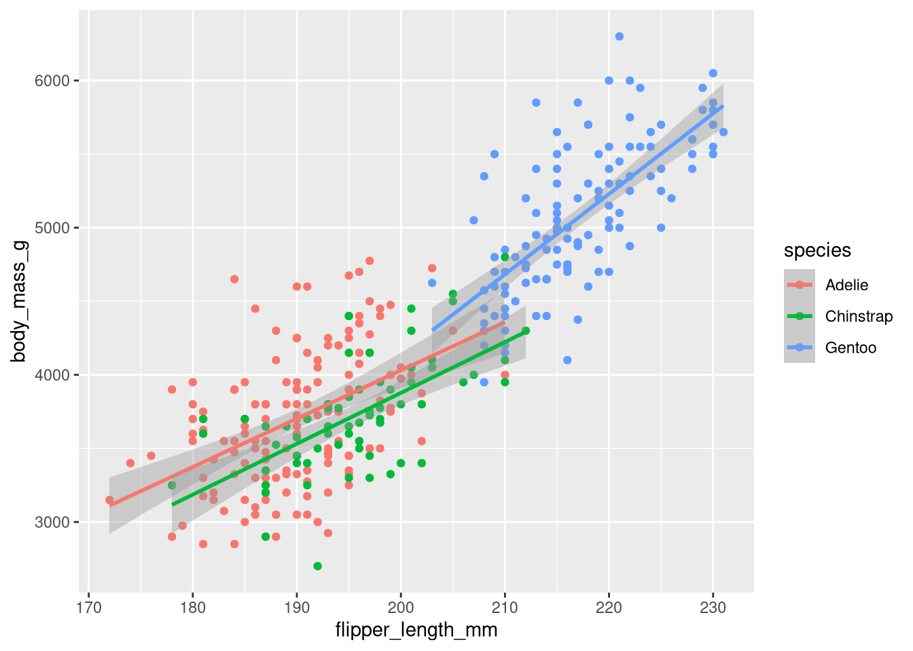

R version 4.5.2 (2025-10-31) -- "[Not] Part in a Rumble"
Copyright (C) 2025 The R Foundation for Statistical Computing
Platform: x86_64-pc-linux-gnu
R is free software and comes with ABSOLUTELY NO WARRANTY.
You are welcome to redistribute it under the terms of the
GNU General Public License versions 2 or 3.
For more information about these matters see
https://www.gnu.org/licenses/.
You should see some information about you R version.
9.2 Interfacing with VS Code
Restart VS Code and install the R extension (look to the left panel for the extension launcher; it looks like a little set of squares).
9.2.1 Resources
R for Data Science is a text book on data science that uses R. The author is a prolific R package author and the itself written in Quarto. It includes many examples that you can test by cutting and pasting into your IDE.
9.3 Installing R Packages
There are many tools for this. Some of them are GUI tools, and they will at first appear easier. But if your library starts to grow, or you need to install particular versions of packages, old packages, or packages from Github and not on CRAN, then you will be much happier in a R interpreter.
To create an R interpreter in VS Code you can simply launch a new terminal and then type R and . You should see an R welcome message. Code like the snippet to follow shows a basic installation exchange.
The tidyverse is a very popular collection of R code that itself will depend on many additional pieces of R code and other packages, some R and some not.
9.4 Mix R Code with Text for Reproducible and Documented Workflows
Here is an example of embedding R code in a qmd document. In this code we download and install a package if necessary (the if statement). Then we use that package to load some data and generate a plot. The plot you see in this document is the result of that code. I did not cut and paste a png.
if(!require(tidyverse)){install.packages("tidyverse",repos='https://mirror.csclub.uwaterloo.ca/CRAN/')}if(!require(palmerpenguins)){install.packages("palmerpenguins",repos='https://mirror.csclub.uwaterloo.ca/CRAN/')}library(tidyverse)library(palmerpenguins)ggplot(data = penguins,mapping =aes(x = flipper_length_mm, y = body_mass_g, color = species)) +geom_point() +geom_smooth(method ="lm")

9.5 R Types
As mentioned in the code chapter, programming language values are typically typed. R in particular has many complicated data types that represent the output of functions and statistical analyses. If things are getting confusing you might want to check on the type of your data.
Figure 9.3: Each of three datatypes in R are demonstrated.
9.6 Data.Frames
Data.Frames are particularly central to the R analysis model and are a killer feature. Think of data.frames as a supercharged spreadsheet with columnn names.
cars is a data set built in the R language. We use the is.data.frame command to ask if a variable is or is not a data.frame.
9.7 Selecting Data
A bit of code that tests for whether something is true or false can be called a predicate. Predicates are important when having your code do something conditionally. If this is true then do this, otherwise do that. This common construct of “if-then-else” exists in most programming languages. In the next code snippet we use the conditional expressions to select on a subset of our data. You might use something similar to figure out how many of the participants in an experiment were Arts students and under 20 years of age.
length(cars$dist[cars$speed >10& cars$speed <20])
[1] 29
Figure 9.4: How many cars are there that can go faster than 10, but not more than 20?
What is going on here? 1. cars is the name of the data frame. 2. We access a column of the data frame with the dollar sign notation cars$dist. You can see the names of the columns in a data frame with names(cars). 3. We use the square brackets to index the column of data we are interested in. Here we do not use specific numbers, but rather we use a boolean to compare the values in a column and we only include the TRUE values. Here we ask for all the indices where the speed is greater than 10, but less than 20, and we use those indices to get the values for the dist column.
9.8 Practice
Sort (or order) cars by the dist variable.
Find the mean and standard deviation of the speed of the cars.
Are there other datasets?
```{r}library(help="datasets")```
Open any of the datasets that catches your eye.
What are the column names?
How many rows?
What is the comment designator for R?
What is the ending extension of an R script?
9.9 Looping in R
Tip
Loops are more common in python than R. R often allows you to “map” over data, and you will not need to loop, but when you do …
Edit the above so that it prints the individual number each time it goes through the loop, and not the whole list.
Create a list of at least 8 individual characters. 1.Make sure they are not in alphabetical order 2.Print the letters one at a time. 3.Print the letters sorted alphabetically one at a time, but do not overwrite your original list. 4.Print the letters from both lists with a format command that says which position the letter is in.
Code
myName ="brittAnderson"myList =unlist(strsplit(myName,""))for (l in myList){print(l) }for (l in myList[order(myList)]){print(l) }i =1for (n inorder(myList)){ t <-sprintf("The %.0fth letter of myList is: %s, but is %s in the sorted list.",i,myList[i],myList[n])print(t) i = i+1 }
The arrow is used to assign something to a name. Other languages usually use the equals sign. The keyword function tells R you are creating a function, and the parentheses following establishes the number of inputs and the nicknames you will use in your function.
2
return specifies what we want to get back from the function.
Now we can use the function we defined with particular inputs.